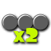
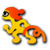

| Ink Saver (Main) |
 |
Decreases Main Weapon Ink usage. |
| Special Charge Up |
 |
Increases the rate at which the Special Gauge fills. |
| Sub Power Up |
 |
Increases performance of Sub Weapons. |
| Ink Saver (Sub) |
 |
Decreases Sub Weapon Ink usage. |
| Special Saver |
 |
Decreases Special Gauge loss after being splatted. |
| Ink Resistance Up |
 |
Decreases damage, speed, and jump penalties when standing in enemy Ink. |
| Ink Recovery Up |
 |
Increases Ink Tank refill rate while in squid form. |
| Special Power Up |
 |
Improves effectiveness of Special Weapon. |
| Bomb Defense Up |
 |
Reduces damage taken by blasts from sub weapons or special weapons. |
| Run Speed Up |
 |
Increases movement speed in humanoid form. |
| Quick Respawn |
 |
Reduces respawn time after getting splatted wthout splatting any opponents. |
| Cold-Blooded |
 |
Shortens the duration of position trackers. |
| Swim Speed Up |
 |
Increases movement speed while swimming in squid form. |
| Quick Super Jump |
 |
Increases Super Jump speed. |
| Opening Gambit |
 |
Boosts your speed in both inkling and squid form for the first 30 seconds of battle. |
| Ninja Squid |
 |
Leaves no trace when swimming in inked ground, but slightly reduces swim speed. |
| Ability Doubler |
 |
Doubles the effect of other gear abilities attached to this gear. |
| Last-Ditch Effort |
|
Boosts ink recovert rate and weapon ink efficiency for the last 30 seconds of battle. |
| Haunt |
 |
Once you've respawned, reveals the position of the player who splatted you. |
| Stealth Jump |
|
Hides you Super Jump landing point from distant players. |
| Tenacity |
 |
Fills special gauge automatically if your team has fewer active players that the enemy team. |
| Thermal Ink |
 |
Allows you to track distant players hit with shots from your main weapon. |
| Object Shredder |
 |
Increases damage dealt to all non-player targets. |
| Comeback |
|
Boosts some of your abilities for a short time after respawning. |
| Respawn Punisher |
 |
Increases respawn time and special-gauge spawn penalty for you and any player who splats you. |
| Drop Roller |
 |
Tilting the L Stick during a Super Jump allows you to perform a forward or sideways roll when you land. |